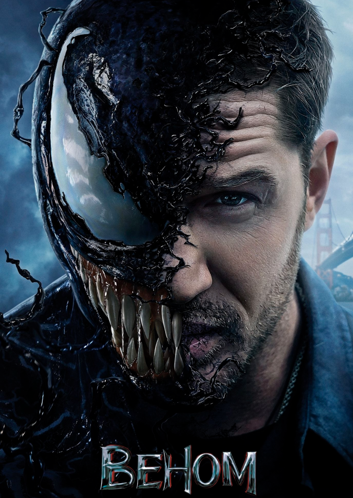

Веном
Про що фільм "Веном":
Сольний фільм про одного з найзапекліших ворогів Людини-павука - Едварда Брока молодшого. У головній ролі неперевершений Том Гарді. Продюсери обіцяють повністю переосмислити персонажа і зробити його цікавим. Уже з ранніх етапів постало питання участі Тома Холанда у даному фільмі, і він навіть заявлений у списку акторів, та все ж режисер стверджує, що весь фільм буде присвячений симбіоту. Веном - один з найдавніших персонажів коміксів Марвел - симбіот-вигнанець з рідної планети, де чудовиська подібні на нього були набагато жорстокішими за героя та набагато злішими. Він володіє можливістю симбіозу з людиною наділяючи її суперздібностями, проте по троху зводячи її з розуму та живлячись її страхом. Веном в певний час володів багатьма, у тому числі і Пітером Паркером. Та головним носієм є Едді Брок, про якого і ведеться розповідь у фільмі. Переглянувши Веном Ви дізнаєтесь як змінилось життя журналіста - невдахи після зустрічі з інопланетною істотою та які випробування випали на його нелегку долю. Імовріно цьому злодію Ви будете співчувати, та в іншому світлі побачите даного героя.
дивитись онлайн